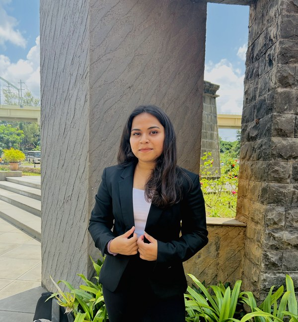

👋 Hey there! I'm
From circuits to clinical AI — building what matters.
Data Scientist · Healthcare Analytics · AI/ML Engineer
Scroll

I'm a Data Scientist who grew up in a healthcare family in Pune — dad's a pharmacist, mom's a doctor. That shaped everything. I went from electronics engineering to healthcare analytics to building AI systems that help clinicians make better decisions.
My engineering background taught me systems thinking — how data flows, where noise enters, how to build things that hold up. At Endeavor Health Services, I worked with real patient data, and at UB's neuroscience lab, I built real-time ML inference for brain experiments.
Outside work — I'm learning from the Bhagavad Gita, saving up travel destinations for someday, painting when the mood strikes, working out on good days, listening to music on every day, and binge-watching series on the rest.
Electronics → Healthcare → AI. Each built on the last.
B.E. in ENTC — signals, circuits, IoT. Built a cold supply chain monitoring system. Healthcare was always in the air at home.
Deep learning on 500K+ records, 92% accuracy. ETL with Airflow. Power BI dashboards → $2M+ savings. Real patient data, real stakes.
MS Data Science from UB. Multi-agent AI, NLP, production ML. Building at the intersection of healthcare + intelligent systems.
Deep learning (TensorFlow, Keras) on 500K+ healthcare records — 92% accuracy for 50+ clinicians. Automated ETL with 99.9% data quality, 70% faster. Production ML with Flask + Docker on GCP (<100ms). Power BI dashboards → $2M+ cost savings.
Deep learning for behavioral patterns in neuroscience — 70% less manual analysis. Real-time inference for optogenetics (<100ms, +15% detection). Scalable time-series pipelines with cross-validation.
Classification models (Random Forest, XGBoost) — 92% accuracy. End-to-end pipelines → 60% faster reports. 100K+ customer records, +18% model improvement.
Click any project to see the full story.
Time-series with ARIMA, Prophet & Random Forest for public health.
AI agents collaborating on market analysis — built in 24hrs.
CNN with SHAP/LIME so doctors trust the model.
XGBoost on massively imbalanced financial data.
PySpark + Hadoop processing millions of NYC taxi rides.
Normalized PostgreSQL for Ethereum analytics.